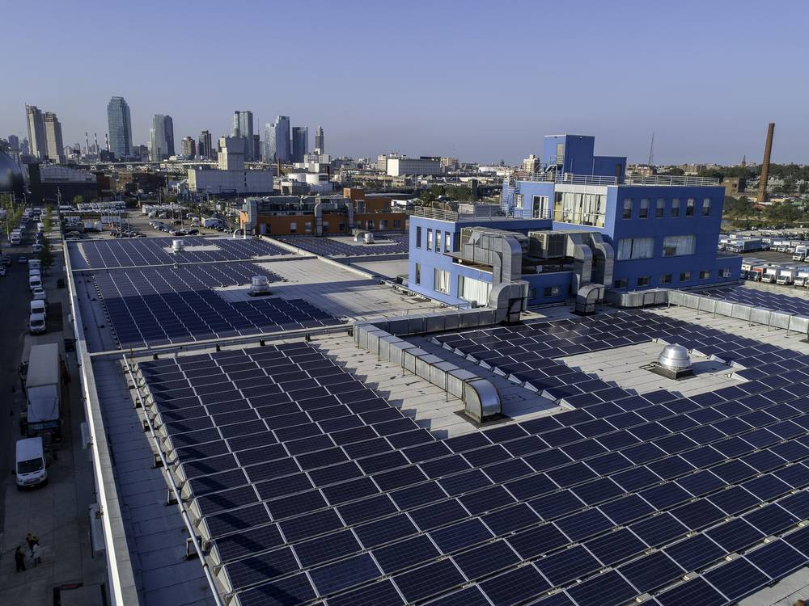

뉴욕시에 '시 소유 재생에너지 개발공사' 세우자…시민단체 보고서 "공공 배터리 200MW만 깔아도 요금 연 1억7,000만 달러 절감"

기후·공공전력 단체 3곳 'PowerNYC' 제안…학교·병원·공공주택 지붕에 태양광·저장장치·지역 열망 직접 개발, 수익 다시 투자하는 자립형 공공 개발자
미국 뉴욕시가 직접 재생에너지 사업을 개발하는 시 소유 공사를 세워야 한다는 제안이 나왔다. 기후·공동체연구소(Climate and Community Institute), 공공재생에너지프로젝트(Public Renewables Project), 퍼블릭파워NY(Public Power NY) 등 3개 단체는 보고서에서 'PowerNYC 개발공사'를 만들어 다섯 개 자치구 곳곳에 태양광, 배터리 저장장치, 지역 열망을 빠르게 깔자고 제안했다. 보고서는 공립학교·병원·공공임대주택 등 태양광을 올릴 수 있는 수천 곳이 준비 시간과 전문성, 초기 자금이 부족해 놀고 있다며, 공사가 발전 자산에서 나오는 수익으로 다음 사업 자금을 마련하는 자립형 구조를 갖추면 이를 풀 수 있다고 봤다. 분산형 배터리 200MW만 먼저 설치해도 전력회사 콘에디슨 요금 납부자들이 해마다 최소 1억7,000만 달러를 아낄 수 있다는 계산도 내놨다. 뉴욕 시민의 전기요금은 1년 전보다 11% 올랐고, 뉴욕시를 포함한 주 남부 전기의 90%는 여전히 화석연료에서 나온다. 공공 소유 확대를 내건 조란 맘다니 시장 행정부가 이 제안을 받아들일지 주목된다.
시민에너지 관점
공공 배터리 200MW로 해마다 1억7,000만 달러를 아낄 수 있다는 뉴욕의 계산은, 재생에너지 개발을 민간 시장에만 맡겨 두면 시민이 그 차액을 요금으로 내게 된다는 사실을 보여 준다. 학교·병원·공공주택 지붕이 놀고 있는 것은 우리 도시도 마찬가지이며, 설치할 곳이 없어서가 아니라 맡아서 개발할 주체가 없어서다. "공공이 하면 비효율적"이라는 걱정은 수익을 다시 투자하는 자립형 공사와 시민 출자를 함께 묶으면 덜 수 있다. 광역·기초 지자체마다 공공 지붕을 모아 개발하고 시민이 지분을 갖는 지역 에너지공사를 세우자.
출처: Jacobin 2026-11-11 Batul Hassan 원문 보기
ニューヨーク市に「市営の再エネ開発公社」を…市民団体の報告書「公共蓄電池200MWだけで料金を年1億7,000万ドル削減」
気候・公共電力の3団体が「PowerNYC」を提案…学校・病院・公営住宅の屋根に太陽光・蓄電池・地域熱網を直接開発し、収益を再投資する自立型の公共開発者
米ニューヨーク市が自ら再生可能エネルギー事業を開発する市営公社を設けるべきだとの提案が出た。気候・コミュニティ研究所（Climate and Community Institute）、公共再生可能エネルギー・プロジェクト（Public Renewables Project）、パブリック・パワーNY（Public Power NY）の3団体は報告書で「PowerNYC開発公社」をつくり、5つの区の各地に太陽光、蓄電池、地域熱網を素早く整備するよう提案した。報告書は、公立学校・病院・公営住宅など太陽光を載せられる数千カ所が、準備の時間や専門性、初期資金の不足で活用されていないと指摘し、公社が発電資産からの収益で次の事業資金をまかなう自立型の仕組みを持てば解決できるとみた。分散型の蓄電池200MWを先に設置するだけで、電力会社コン・エジソンの料金支払者が毎年少なくとも1億7,000万ドルを節約できるとの試算も示した。ニューヨーク市民の電気料金は1年前より11%上がり、ニューヨーク市を含む州南部の電力の90%は依然として化石燃料に由来する。公共所有の拡大を掲げるゾーラン・マムダニ市長の市政がこの提案を受け入れるかが注目される。
市民エネルギーの視点
公共蓄電池200MWで毎年1億7,000万ドルを節約できるというニューヨークの試算は、再エネ開発を民間市場だけに任せておけば、その差額を市民が料金として払うことになると示している。学校・病院・公営住宅の屋根が遊んでいるのは韓国の都市も同じで、設置場所がないのではなく、引き受けて開発する主体がないからだ。「公共がやると非効率だ」という懸念は、収益を再投資する自立型の公社と市民出資を組み合わせれば和らげられる。広域・基礎自治体ごとに公共の屋根を束ねて開発し、市民が持ち分を持つ地域エネルギー公社をつくろう。
出典: Jacobin 2026-11-11 Batul Hassan 原文を読む
为纽约市设立"市属可再生能源开发公司"…民间团体报告称"仅建200兆瓦公共电池即可每年节省电费1.7亿美元"
三家气候与公共电力团体提出"PowerNYC"…在学校、医院和公共住房屋顶直接开发光伏、储能和区域热网，以收益再投资的自立型公共开发商
有人提议美国纽约市设立一家由市政府所有、直接开发可再生能源项目的公司。气候与社区研究所（Climate and Community Institute）、公共可再生能源项目（Public Renewables Project）和公共电力纽约（Public Power NY）三家团体在报告中建议成立"PowerNYC开发公司"，在五个行政区快速部署光伏、电池储能和区域热网。报告指出，公立学校、医院和公共住房等数千个可安装光伏的场所，因缺乏准备时间、专业能力和前期资金而闲置；若公司能以发电资产收益为下一轮项目融资、形成自立循环，就能解决这一问题。报告还估算，仅先部署200兆瓦分布式电池，电力公司爱迪生联合电气（Con Edison）的用户每年就可节省至少1.7亿美元。纽约市民的电费比一年前上涨了11%，包括纽约市在内的州南部地区仍有90%的电力来自化石燃料。以扩大公共所有为施政方向的佐兰·曼达尼市长政府是否会采纳这一提议，备受关注。
市民能源视角
纽约以200兆瓦公共电池每年节省1.7亿美元的测算表明，如果把可再生能源开发完全交给私人市场，差价最终要由市民以电费形式承担。学校、医院和公共住房屋顶闲置的情况在韩国城市同样存在，问题不在于没有地方装，而在于没有主体去开发。"公共来做就会低效"的担忧，可以通过把收益再投资的自立型公司与市民出资结合起来加以缓解。各广域和基层地方政府应设立汇集公共屋顶统一开发、由市民持股的地区能源公司。
来源: Jacobin 2026-11-11 Batul Hassan 查看原文
Advocates Urge New York City to Create a City-Owned Renewable Developer, Saying 200MW of Public Batteries Alone Could Save Ratepayers $170 Million a Year
Three climate and public power groups propose "PowerNYC" to build solar, storage and thermal energy networks on schools, hospitals and public housing, recycling revenue into new projects
A new proposal calls on New York City to set up a city-owned corporation that would develop renewable energy projects itself. In a report, the Climate and Community Institute, the Public Renewables Project and Public Power NY propose a "PowerNYC Development Corporation" to rapidly deploy solar, battery storage and thermal energy networks across the five boroughs. The report says thousands of viable sites at public schools, hospitals and affordable housing sit unused for lack of time, expertise and upfront capital, and argues that a self-sustaining public developer funding new rounds of projects from the revenue of the assets it owns could close that gap. It estimates that an initial 200MW of distributed batteries could save Con Edison ratepayers at least $170 million a year. New Yorkers are paying 11% more for electricity than a year ago, and 90% of downstate power still comes from fossil fuels. Attention now turns to whether Mayor Zohran Mamdani's administration, which has championed public ownership, will take up the idea.
Citizen Energy View
New York's estimate that 200MW of public batteries could save $170 million a year shows that when renewable development is left to private markets alone, citizens pay the difference on their bills. Korean cities, too, have school, hospital and public housing roofs sitting idle, not for lack of space but for lack of anyone tasked with developing them. Concerns that public bodies are inefficient can be eased by pairing a self-financing public developer with citizen investment. Every province and city should set up a local energy corporation that bundles public rooftops for development and gives citizens an ownership stake.
Source: Jacobin 2026-11-11 Batul Hassan Read the original